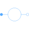

ReferenceSourcePartial of voltage or current source with reference input |

|
Information
This information is part of the Modelica Standard Library maintained by the Modelica Association.
The source partial model relies on the TwoPlug and contains a proper icon.
See also
VoltageSource, VariableVoltageSource, CurrentSource, VariableCurrentSource, SinglePhase.Interfaces.Source.
Parameters (1)
| m |
Value: 3 Type: Integer Description: Number of phases |
|---|
Connectors (2)
| plug_p |
Type: PositivePlug Description: Positive quasi-static polyphase plug |
|
|---|---|---|
| plug_n |
Type: NegativePlug Description: Negative quasi-static polyphase plug |
Components (2)
| v |
Type: ComplexVoltage[m] Description: Complex voltage |
|
|---|---|---|
| i |
Type: ComplexCurrent[m] Description: Complex current |
Extended by (2)
|
Modelica.Electrical.QuasiStatic.Polyphase.Sources Variable polyphase AC current with reference angle input |
|
|
Modelica.Electrical.QuasiStatic.Polyphase.Sources Variable polyphase AC voltage with reference angle input |